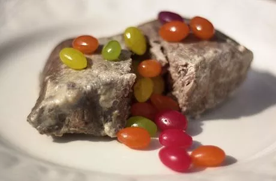

Milk Stake

Ingredients:
1 medium 8.8oz. (.25Kg) flat iron steak (top blade shoulder steak)
2 cup milk (preferably whole, called "4%")
1/4 cup honey
1/2 tsp cinnamon
1/2 tsp nutmeg
1 tsp vanilla extract
Garnish:
1/2 cup Jelly Belly® jelly beans